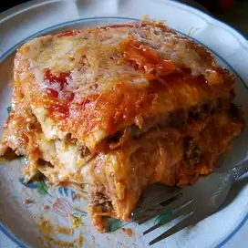

lasagna

this is mexican traditional dish
anyone can really make it...
Ingredients
- 1 ½ pounds ground beef
- ¼ cup water
- 1 (1 ounce) packet taco seasoning mix
- 12 (8 inch) flour tortillas, or more if needed
- 1 (14 ounce) can refried beans
- 3 cups shredded Colby-Jack cheese
Steps
- step 1
- Preheat oven to 350 degrees F (175 degrees C). Grease a 9x13-inch casserole dish.
- step 2
- Heat a large skillet over medium-high heat and stir in ground beef. Cook and stir
until beef is crumbly, evenly browned, and no longer pink, about 10 minutes.
Drain and discard any excess grease. Add water and taco seasoning; cook and
stir until mixture has thickened, 5 to 10 minutes.
- step 3
- Bake in the preheated oven until top tortilla layer begins to brown, 20 to 25 minutes.
Sprinkle 1 cup Colby-Jack cheese over lasagna.
- step 4
- Turn on oven's broiler.
- step 5
- Place lasagna under the broiler until Colby-Jack cheese is melted and bubbling,
3 to 5 minutes.